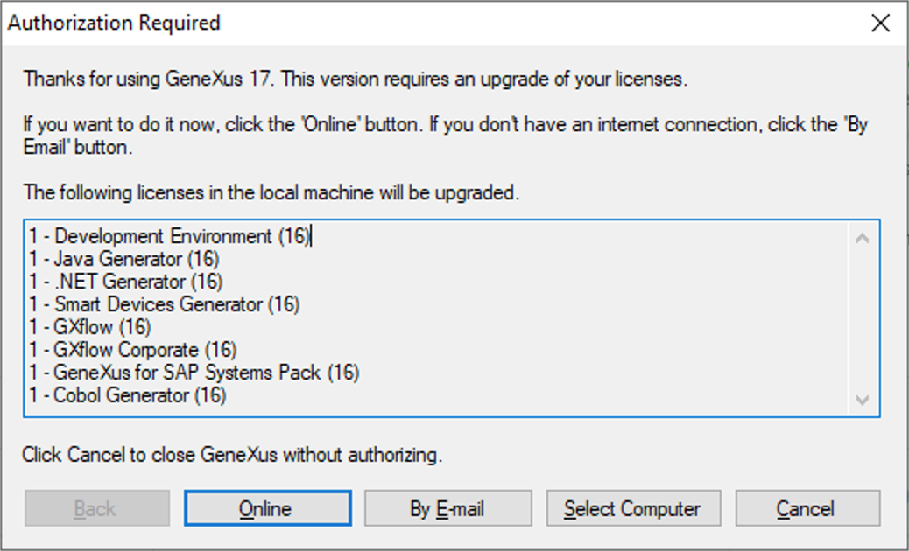
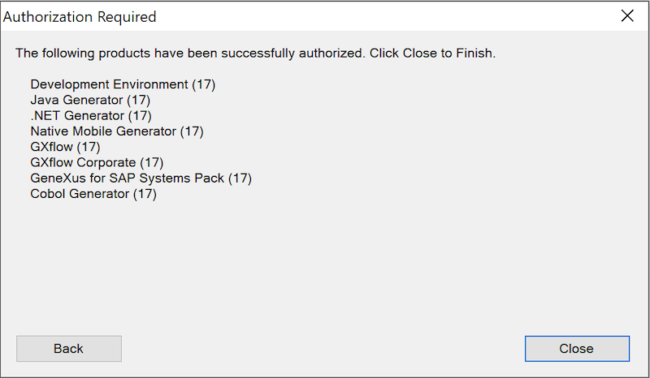

If you are coming from a previous GeneXus version, the first step in order to use the new one is to upgrade your licenses to the new version. There are two main ways to upgrade licenses, with both you get the same result: Your licenses are upgraded to the new version, and those licenses can be shared with previous GeneXus versions. Full automatic upgradeThis method updates your licenses automatically to the new version. To use it, Open GeneXus, a dialog like the following will appear.  If you click on the 'Online' button, you will be prompted for your GeneXus Account credentials and then your licenses will be updated automatically as shown in the following dialog  This method can be used under the following circumstances
Two Steps updateUsing this method, first of all, you need to uninstall all the licenses for those products that the new version includes. This must be done using the previous version's License Manager by mean of the 'Uninstall' button. Copy and keep the uninstall code. Important: Do not uninstall those product's licenses that are not supported or released in the new version. Then you need to ask for new licenses that correspond to the new GeneXus version. In order to do that, run the GeneXus License Manager and follow the wizard after pressing the Authorize button. You need to attach the Uninstall code in this request. Once you receive the answer with the site keys (a file named keys.gxa), run the Genexus License Manager again in order to authorize the products. |
| Backlinks |
| Category:GeneXus 17 Installation Manual |
| GeneXus Activation |
| Sharing Licenses with other GeneXus versions |